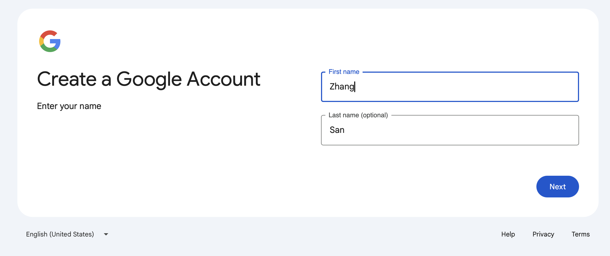
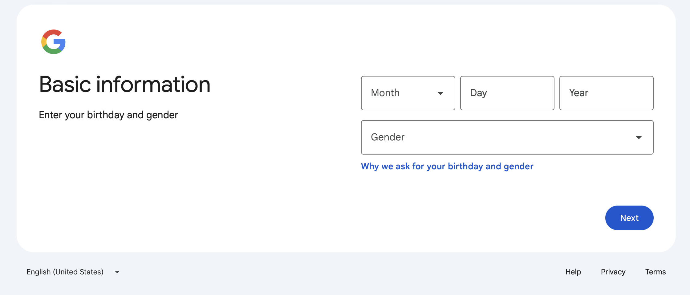
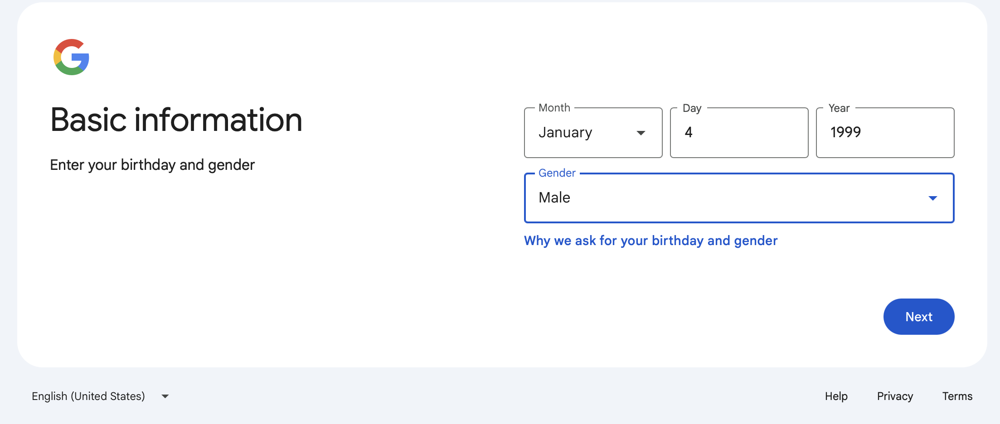
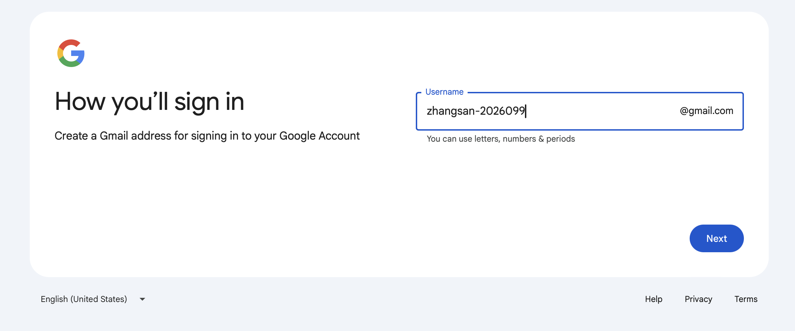
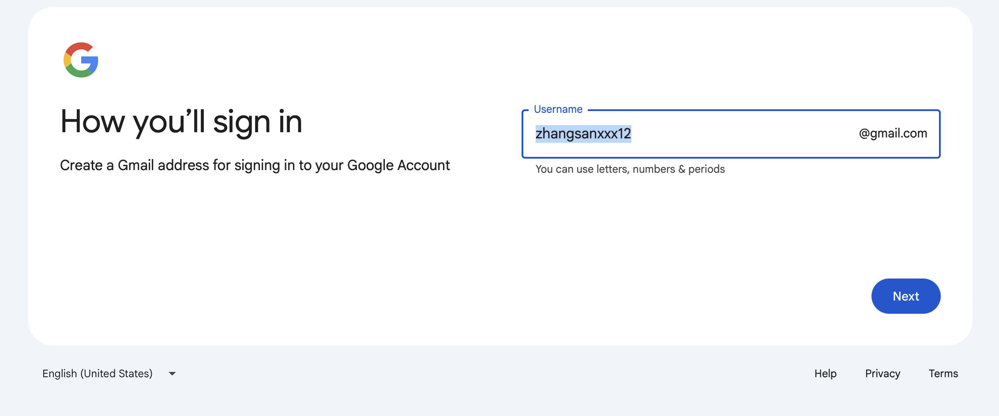
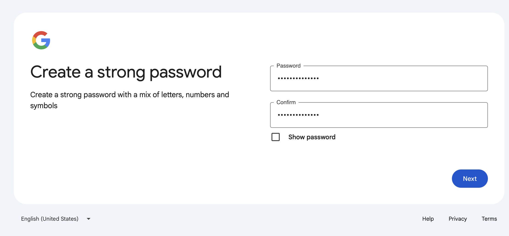
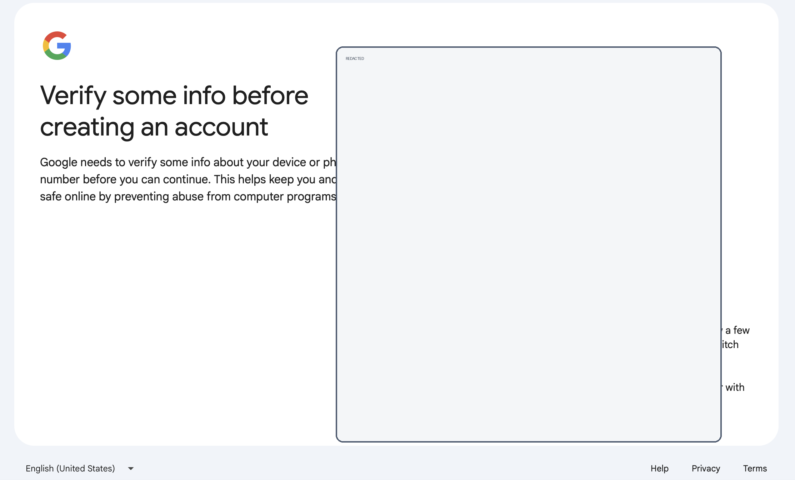

Wiki Template
ChatGPT 账号注册、Plus 升级与 Codex 使用环境搭建 Wiki 模板
适用对象：第一次使用 ChatGPT 和 Codex 的同学
更新时间：2026-05-10
维护人：填写维护人姓名
官方参考：
- ChatGPT 入口：https://chatgpt.com/
- ChatGPT 价格页：https://openai.com/chatgpt/pricing/
- ChatGPT Plus 帮助：https://help.openai.com/en/articles/6950777-what-is-chatgpt-plus
- Codex 套餐说明：https://help.openai.com/en/articles/11369540-using-codex-with-your-chatgpt-plan
- Codex CLI 文档：https://developers.openai.com/codex/cli
1. 文档目标
本文用于说明：
- 如何注册 ChatGPT 账号。
- 如何升级到 ChatGPT Plus 会员。
- 如何准备本地 Codex 使用环境。
- 如何完成 Codex 登录和第一次使用。
- 如何处理常见问题。
本文不包含：
- 账号共享、代充或绕过限制的操作。
- 非官方客户端或未知来源安装包。
- 违反 OpenAI 服务条款的使用方式。
2. 准备工作
2.1 设备和浏览器
建议准备：
- 一台可正常联网的电脑。
- 最新版本的 Chrome、Edge、Safari 或 Firefox。
- 一个可正常收信的邮箱。
- 可用于支付订阅的付款方式。
截图占位：
[截图：浏览器打开 chatgpt.com 首页]2.2 Google邮箱注册
科学上网务必选取美国站点，这样就不要验证手机号，务必注意⚠️⚠️⚠️：
流程截图如下：







2.3 本地开发环境
如果需要使用 Codex CLI，建议提前安装：
| 工具 | 用途 | 检查命令 | 备注 |
|---|---|---|---|
| Git | 管理代码仓库 | git --version | 推荐先熟悉 clone、status、commit |
| Node.js | 安装 Codex CLI | node -v | 建议使用当前长期支持版本或官方推荐版本 |
| npm | 安装命令行工具 | npm -v | 通常会随 Node.js 一起安装 |
| 代码编辑器 | 查看和编辑项目 | 不适用 | VS Code、Cursor、Windsurf 等均可 |
检查示例：
git --version
node -v
npm -v预期结果：
能够看到版本号，说明对应工具已经安装。
如果提示 command not found，需要先安装对应工具。3. 注册 ChatGPT 账号
3.1 打开 ChatGPT
- 打开浏览器。
- 访问：https://chatgpt.com/
- 点击登录或注册入口。
截图占位：
[截图：ChatGPT 首页登录/注册入口]3.2 创建账号
可选方式：
- 使用邮箱注册。
- 使用 Google 账号登录。
- 使用 Microsoft 账号登录。
- 使用 Apple 账号登录。
填写说明：
| 项目 | 说明 |
|---|---|
| 邮箱 | 建议使用长期可访问的个人或公司邮箱 |
| 密码 | 建议使用高强度密码，并保存到密码管理器 |
| 验证邮件 | 按页面提示打开邮箱完成验证 |
| 登录方式 | 后续登录时要使用同一种方式，避免误进另一个账号 |
截图占位：
[截图：邮箱验证页面]3.3 首次登录检查
登录后建议确认：
- 左下角或账号菜单显示的是自己的账号。
- 能够正常新建对话。
- 能够在设置中找到账号、数据控制和订阅相关入口。
记录：
账号邮箱：
注册日期：
登录方式：4. 升级 ChatGPT Plus
4.1 升级前确认
升级前先确认：
- 当前登录的是正确账号。
- 已了解 Plus 的当前价格和权益，以官方价格页为准。
- 已准备好可用的付款方式。
- 如果是团队或公司使用，先确认是否应使用 Business、Enterprise 或 Edu 计划。
官方页面：
https://openai.com/chatgpt/pricing/4.2 从网页端升级
常见路径：
- 登录 ChatGPT。
- 打开账号菜单。
- 选择升级计划或 Upgrade Plan。
- 选择 Plus。
- 按页面提示完成支付。
截图占位：
[截图：账号菜单中的 Upgrade Plan]
[截图：Plus 计划选择页面]
[截图：支付确认页面，注意遮挡隐私信息]4.3 升级后验证
升级完成后检查：
- 账号菜单或设置中显示当前计划为 Plus。
- 能看到 Plus 对应的可用功能或更高使用额度。
- 发票、订阅管理和取消入口可以正常打开。
记录：
升级日期：
订阅计划：
付款方式后四位，选填：
发票下载位置：4.4 注意事项
- Plus 是 ChatGPT 订阅，不等同于 API 免费额度。
- API 用量通常需要单独配置和计费。
- 价格、功能、额度可能变化，写正式教程前请重新检查官方页面。
- 如果扣款成功但账号仍显示免费版，先确认是否登录了同一个账号和同一种登录方式。
5. Codex 使用方式概览
Codex 是 OpenAI 的编码智能体，可以帮助阅读代码、修改文件、运行测试、解释项目和处理开发任务。
常见入口：
| 入口 | 适合场景 | 备注 |
|---|---|---|
| Codex App | 桌面端协作和本地项目开发 | 适合日常开发 |
| Codex CLI | 在终端里使用 Codex | 适合开发者和脚本化工作流 |
| IDE 扩展 | 在编辑器里调用 Codex | 适合边写代码边协作 |
| Codex Web | 云端委托任务 | 通常需要连接 GitHub 仓库 |
截图占位：
[截图：Codex 入口或客户端选择页面]6. 搭建 Codex CLI 使用环境
6.1 安装前检查
运行：
node -v
npm -v
git --version如果没有安装 Node.js：
前往 Node.js 官网下载安装包，或使用公司内部推荐的软件安装方式。如果没有安装 Git：
前往 Git 官网下载安装包，或使用系统自带开发者工具安装。6.2 安装 Codex CLI
官方帮助文档中的安装方式示例：
npm i -g @openai/codex安装后检查：
codex --version截图占位：
[截图：终端显示 codex 版本号]6.3 启动并登录 Codex
安装完成后，在终端运行：
codex首次运行时，Codex 会提示登录。按页面提示：
- 在浏览器中打开登录页面。
- 使用 ChatGPT 账号或 API Key 完成认证。
- 使用自己的 ChatGPT 账号登录。
- 回到终端确认登录完成。
截图占位：
[截图：Codex CLI 登录提示]
[截图：ChatGPT 认证页面]
[截图：终端登录成功提示]6.4 进入项目目录
建议在 Git 仓库中使用 Codex：
cd 你的项目目录
git status
codex说明：
git status用于确认当前项目是否是 Git 仓库，以及是否存在未提交修改。- 第一次使用 Codex 时，建议选择较保守的权限模式，先让它读取项目、解释代码、提出修改建议。
- 在让 Codex 自动修改或运行命令前，先确认项目中没有重要的未备份内容。
7. Codex 简单使用示例
7.1 让 Codex 解释项目
可输入：
请阅读这个项目，帮我总结项目结构、启动方式和主要功能。期望输出：
Codex 会查看项目文件，并给出目录结构、技术栈、关键入口文件和运行建议。7.2 让 Codex 修复问题
可输入：
这个项目启动时报错，请帮我定位原因并修复。修复后请运行相关检查。建议补充：
报错信息：
复现步骤：
期望行为：
实际行为：7.3 让 Codex 添加小功能
可输入：
请给首页增加一个常见问题区域，风格保持和现有页面一致。完成后请检查移动端布局。验收清单：
- 页面能正常打开。
- 样式和现有设计一致。
- 手机和桌面端都不重叠。
- 没有无关文件被修改。
7.4 让 Codex 做代码审查
可输入：
请 review 当前改动，重点检查潜在 bug、边界情况、回归风险和缺失测试。期望输出：
Codex 应优先列出问题、影响范围和建议修复方式，而不是只做概括。8. 常见问题
8.1 注册后收不到验证邮件
排查步骤：
- 检查垃圾邮件。
- 确认邮箱地址是否拼写正确。
- 等待几分钟后重新发送验证邮件。
- 更换网络或浏览器重试。
8.2 升级 Plus 后没有生效
排查步骤：
- 确认是否登录了购买 Plus 的同一个账号。
- 确认是否使用了相同登录方式，例如邮箱、Google、Apple 或 Microsoft。
- 退出所有设备后重新登录。
- 在移动端购买的订阅，按应用内提示恢复购买。
- 仍未解决时联系 OpenAI 支持，并准备付款凭证。
8.3 npm i -g @openai/codex 失败
排查步骤：
- 检查 Node.js 和 npm 是否已安装。
- 检查当前网络是否能访问 npm registry。
- 检查是否有权限安装全局 npm 包。
- 如果是公司电脑，确认是否需要使用公司代理或内部软件源。
记录错误：
错误命令：
错误截图：
操作系统：
Node.js 版本：
npm 版本：8.4 首次运行 codex 时登录失败
排查步骤：
- 确认浏览器中登录的是正确 ChatGPT 账号。
- 关闭浏览器隐私模式后重试。
- 更新 Codex CLI 到最新版本。
- 清理旧登录状态后重新登录。
可记录：
错误提示：
发生时间：
是否使用代理：
是否公司网络：8.5 Codex 修改代码前要注意什么
建议：
- 先确认项目已纳入 Git 管理。
- 修改前运行
git status。 - 不要在有重要未保存内容时让 Codex 自动大范围修改。
- 让 Codex 修改后运行测试或启动检查。
- 提交前人工 review 关键改动。
9. 推荐新手练习
练习 1：解释一个项目
目标：
让 Codex 读项目，不做修改，只输出项目结构和启动方式。提示词：
请只阅读项目，不修改文件。帮我总结这个项目的目录结构、主要入口、启动方式和注意事项。练习 2：修复一个文案问题
目标：
让 Codex 做一次小范围修改，熟悉确认流程。提示词：
请把首页中不自然的中文文案润色一下，保持意思不变。完成后告诉我改了哪些文件。练习 3：添加一个简单页面
目标：
让 Codex 完成一个低风险功能。提示词：
请新增一个关于页面，内容包括个人介绍、技能方向和联系方式。风格保持和现有网站一致。10. 安全和合规提醒
- 不要把账号密码、支付信息、验证码发给任何人。
- 不要把私有 API Key、数据库密码、生产密钥粘贴到公开对话或公开仓库。
- 处理公司代码前，先确认公司是否允许使用相关工具。
- 生成内容、代码和配置上线前必须人工检查。
- 涉及隐私、合规、生产数据的任务，必须按公司规范处理。
11. 维护记录
| 日期 | 修改人 | 修改内容 | 参考来源 |
|---|---|---|---|
| 2026-05-10 | 填写姓名 | 创建初版模板 | OpenAI 官方帮助中心和价格页 |
12. 待补充清单
- [ ] 补充实际注册流程截图。
- [ ] 补充 Plus 升级流程截图。
- [ ] 补充不同系统的 Node.js 安装方式。
- [ ] 补充 macOS、Windows、Linux 的 Codex CLI 安装差异。
- [ ] 补充公司内部网络或代理配置说明。
- [ ] 补充常见报错截图和解决方案。
- [ ] 补充一套完整的新手演示案例。